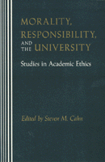

<body bgcolor="#FFFFFF" text="#000000" link="#0000FF" vlink="#CC0000" alink="#CC0000"><center><hr width="350" size="1" align="center" noshade>Critically investigating crucial moral issues generated by academic life<hr width="350" size="1" align="center" noshade><p><a href="https://cdcshoppingcart.uchicago.edu/Cart/ChicagoBook.aspx?ISBN=9780877226468&&PRESS=temple" target="_top">Buy this book!</a> | <a href="https://cdcshoppingcart.uchicago.edu/Cart/Cart.aspx?PRESS=temple" target="_top">View Cart</a> | <a href="https://cdcshoppingcart.uchicago.edu/Cart/Cart.aspx?PRESS=temple" target="_top">Check Out</a></p><p></p></center><!--none//--><h1>Morality, Responsibility, and the University</h1>
<H2>Studies in Academic Ethics</H2>
<h3>edited by Steven M. Cahn</h3>
<P>cloth 0-87722-646-6 $56.50, Nov 90, <FONT COLOR=#990033>Out of Stock Unavailable</FONT>
<br>paper 0-87722-959-7 $30.95, Mar 92, <FONT COLOR=#990033>Available</FONT>
<br>Electronic Book 1-43990-592-4 $30.95 <FONT COLOR=#990033>Out of Stock Unavailable</FONT>
<BR> 288 pp
6x9
</P><BLOCKQUOTE><I>"[A] timely and important book.... These thoughtful essays surely will shape the debate about morality in higher education for years to come and provide guidance in the quest to improve the quality of campus Iife."</I>
<br>&#151<b>Ernest L. Boyer</b>, President, Carnegie Foundation for the Advancement of Teaching<I></I></BLOCKQUOTE>
<p>This book, the first of its kind, consists of fourteen original essays by noted American philosophers critically investigating crucial moral issues generated by academic life. The authors ask: What are the standards of conduct appropriate in class-rooms, departmental meetings, and faculty meetings, in grading students, evaluating colleagues, and engaging in research?
<BR>&nbsp;<h2>Reviews</h2>
<p><I>"The need for appropriate, sustained, philosophical analyses and examinations of practical ethics dilemmas in academic life undoubtedly is required since the reporting of questionable conduct alone does little to resolve the problem. This book of essays provides a vehicle for beginning this sustained investigation."</I>
<br>&#151<b>Betty A. Sichel</b>, Long Island University
<p><I>"The essays address neglected matters which not only should, but I believe will, be of interest to academics...and perhaps a few administrators, which would be a very good thing indeed."</I>
<br>&#151<b>Hans Oberdiek</b>, Swarthmore College
<BR>&nbsp;<h2>Contents</h2><P>
<p>Introduction &#150 Steven M. Cahn
<br>1. Human Rights and Academic Freedom &#150 Alan Gewirth
<br>2. Free Speech on Campus &#150 Judith Wagner DeCeu
<br>3. Tenure Academe‘s Peculiar Institution &#150 Andrew Oldenquist
<br>4. Ethics in Academic Personnel Processes: The Tenure Decision &#150 Rudolph H. Weingartner
<br>5. The Research Demands of Teaching in Modern Higher Education &#150 Theodore M. Benditt
<br>6. The Truth, the Whole Truth, and Nothing but the Truth &#150 Paul D. Eisenberg
<br>7. The Ethics of Graduate Teaching &#150 Robert Audi
<br>8. Professors. Students, and Friendship &#150 Peter J. Markie
<br>9. Sexual Harassment in the University &#150 Nancy ("Ann") Davis
<br>10. Beyond in Loco Parentis? Parietal Rules and Moral Maturity &#150 David A. Hoekema
<br>11. Business-University Partnerships &#150 Norman E. Bowie
<br>12. Diversity within University Faculties &#150 Alan H. Goldman
<br>13. Academic Appointments: Why Ignore the Advantage of Being Right? &#150 David Lewis
<br>14. A Defense of the Neutral University &#150 Robert L. Simon
<br>About the Authors
</P><BR>&nbsp;<H2>About the Author(s)</H2>
<P><b>Steven M. Cahn</b> is Provost and Professor of Philosophy at the Graduate School of the City University of New York. He has also edited a collection of essays entitled <I><A HREF="982_reg.html" TARGET="_top">Affirmative Action and the University: A Philosophical Inquiry</A></I> (Temple).</P>
<P>Contributors: Robert Audi, Theodore M. Benditt, Norman E. Bowie, Nancy ("Ann") Davis, Judith Wagner DeCew, Paul Eisenberg, Alan Gewirth, Alan H. Goldman, David A. Hoekema, David Lewis, Peter Markie, Andrew Oldenquist, Robert L. Simon, Rudolph H. Weingartner, and the editor.</P>
<BR><H2>Subject Categories</H2>
<p><A HREF="/tempress/philosophy.html" TARGET="_top">Philosophy and Ethics</a>
</p>
<p align="center"><a href="https://cdcshoppingcart.uchicago.edu/Cart/ChicagoBook.aspx?ISBN=9780877226468&&PRESS=temple" target="_top">Buy this book!</a> | <a href="https://cdcshoppingcart.uchicago.edu/Cart/Cart.aspx?PRESS=temple" target="_top">View Cart</a> | <a href="https://cdcshoppingcart.uchicago.edu/Cart/Cart.aspx?PRESS=temple" target="_top">Check Out</a></p><p><font face="Arial" size="1"><a href="copyright.html" onMouseOver="window.status='Web Copyright Policy';return true;" onMouseOut="window.status=''" title="Web Copyright Policy">&copy;</a> 2015 <a href="http://www.temple.edu" target="new" onMouseOver="window.status='Link to Temple University home page';return true;" onMouseOut="window.status=''" title="Link to Temple University home page">Temple University</a>. All Rights Reserved. http://www.temple.edu/tempress/titles/670_reg.html</font></p>